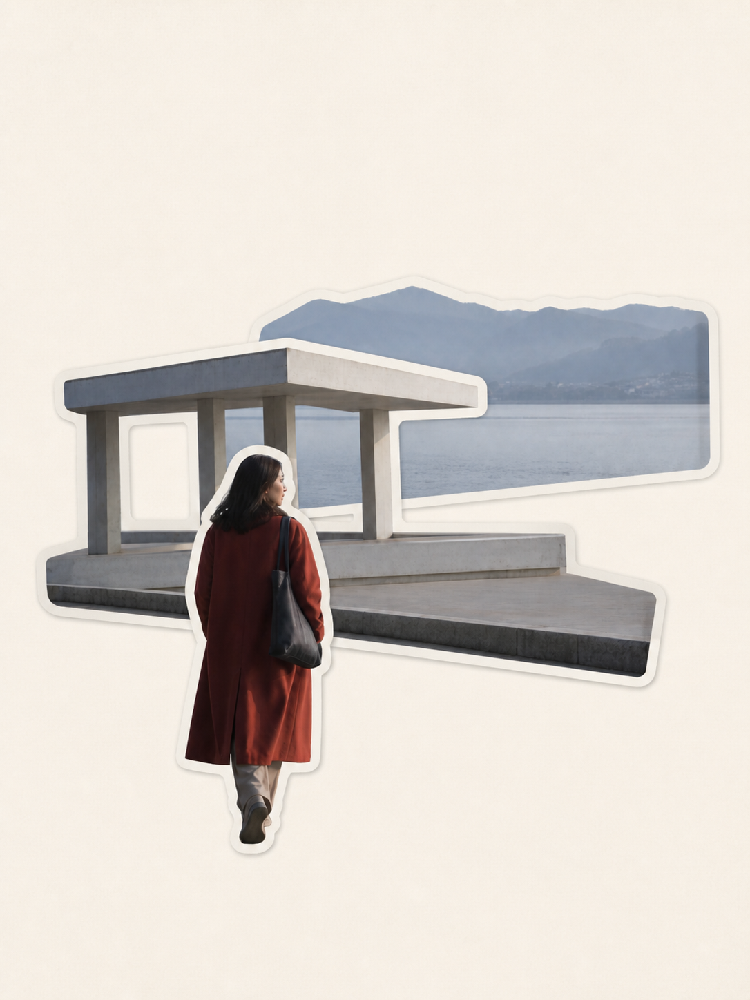
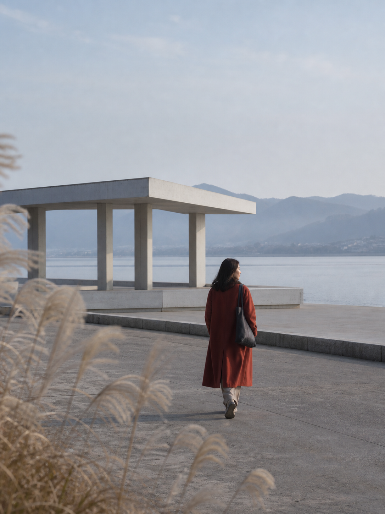
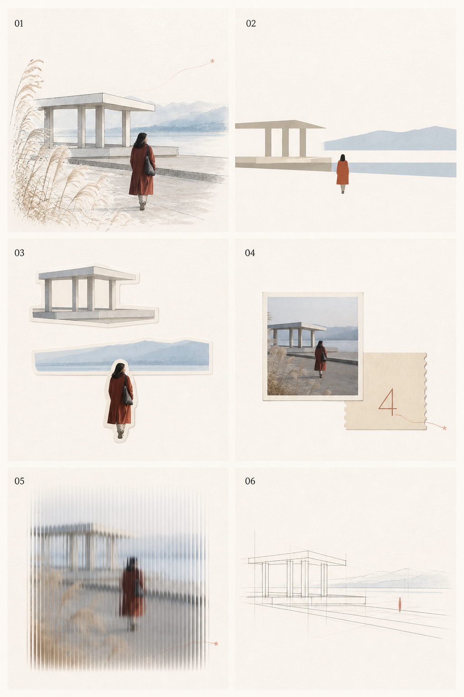
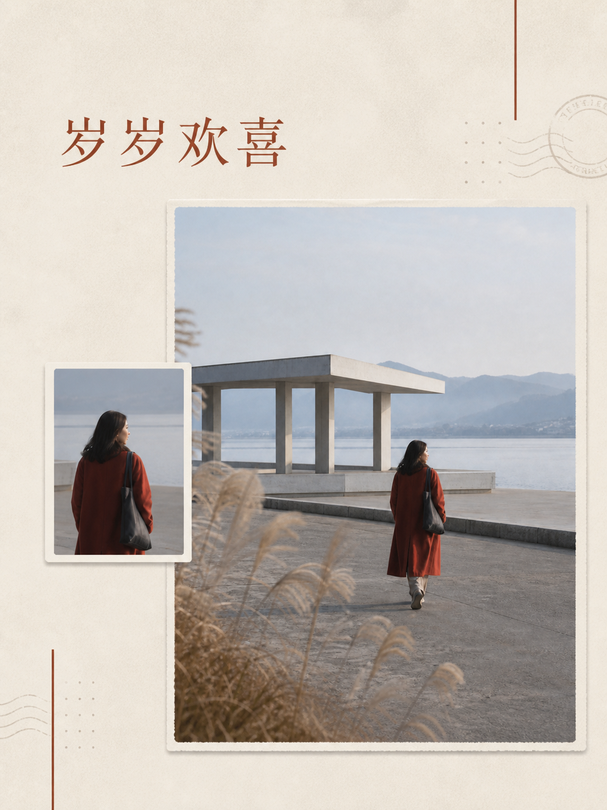
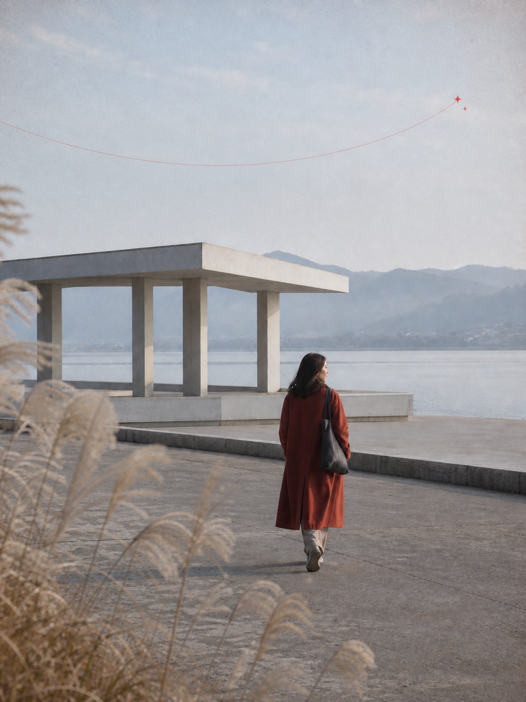
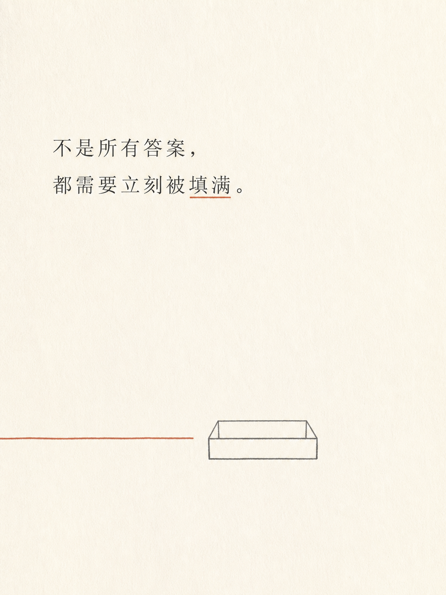

没想好风格
先用六宫格比较艺术方向，再选择一个方向回到原图重生成。六格只承担决策，不是最终必须交付六张。
RESEARCH 07 / AGENT VISUAL DIRECTION
它不是六种固定滤镜。它先理解“这张图要用在哪里”，再决定保留什么、怎样重组、是否加入短文字，最后生成适合旅行、纪念、节日、品牌或内容发布的成品。

仓库负责：视觉理解流程、参数选择、Prompt 合同、风格预览和失败恢复。
外部模型负责：照片理解、抠图、重绘、文字与最终像素。
00 / THE SHORT ANSWER
先用六宫格比较艺术方向，再选择一个方向回到原图重生成。六格只承担决策，不是最终必须交付六张。
直接说“做旅行明信片”或“做生日社媒封面”，Skill 会选择适合的布局、留白、画幅和文字密度。
“用于七夕”可以只控制氛围；“标题只写‘岁岁欢喜’”才要求文字出现在画面里。正式长文仍建议后期排版。
01 / DIRECT DEMONSTRATION

一人、红褐色长外套、亭廊、水面、远山与前景芦苇。前中远景清晰，适合验证分层与结构转译。

真实偏差：04 格额外生成了一个大号“4”。网格与风格成立，但精确文字合同仍不是确定性能力。
成品不裁切、不放大宫格单元，而是重新读取原始照片，把人物、亭廊与步道、水面与山体组成三张完整白边层。拖动滑杆查看输入与结果。
这里没有换照片。人物、红色外套、亭廊、水面和远山都是共同事实；点击旅行、人物或节日，即可直接比较交付目标怎样改变成品。



“不是所有答案，
都需要立刻被填满。”
text 路径默认跳过六格预览。这里保留原句，只使用“空容器 + 停在入口前的线”，没有底图照片、完整故事、图标矩阵或鸡汤标题。
02 / CAPABILITY MAP
照片走记忆转译，句子走隐喻，图文混合时不额外发明文案。
分栏、胶带、拍立得、胶片、展签、邮票窗、票据、透明纸、窥视窗、分层贴纸等。
分栏、视觉岛、中央注记、编辑卡、单作品、不对称档案和贴纸重组。
水彩、线条、矢量、抽象、色块、票据、玻璃、档案、标本、地图、贴纸和隐喻卡。
保留姿态与身份，压缩五官；从原图提取 3–6 色；文案短、冷静、不虚构事实。
候选像滤镜、画面太满、贴纸融合、肖像过写实或节日海报化，都有对应重试合同。
03 / UPSTREAM EVIDENCE


04 / EXTENSION SURFACE
定义概念、媒介、线条、颜色、边缘、材质、人物、字体、微图形、留白与避免项。
改变视觉语言把 Display、Layout、Style、抽象度和文字组合成博物馆器物、家庭档案、建筑田野或品牌底图。
对应稳定用途继续识别封面、Story、邀请函、展签、相册和品牌主视觉，自动决定画幅、安全区与文字密度。
从风格走向交付加入农历日期、OCR、网格检查、真实 Alpha 分割、色板提取和生成清单。
约束概率模型检查人数重复、原句匹配、留白比例、颜色数量、格数和身份相似度，再交给人工判断审美。
先暴露失败背景、照片、贴纸层、文字和微图形独立输出；正式文字进入 Figma、InDesign 或代码排版层。
进入设计生产05 / USE CASES
将人物、地点和环境拆成可收藏的视觉记忆，而不是只给整张照片套色。
保留人物、姿态和服装，用纸张层级、局部裁切与一句短标题建立纪念感。
强调轴线、透视、材料、光线与空间节奏，让照片变成观察记录。
从“这是什么”转向“它有什么颜色、材质、触感和收藏价值”。
不寻找装饰性配图，而是把句子的张力压缩成一个视觉隐喻。
节日只是附加语气，不改变原图人物关系，也不把所有照片改造成节庆海报。
六宫格在这里最有价值：先比较语言，再挑选一个方向回到原图深化。
共同原因是任务要求确定性、精确边界或可规模化治理，而这个仓库提供的是生成式视觉指导。